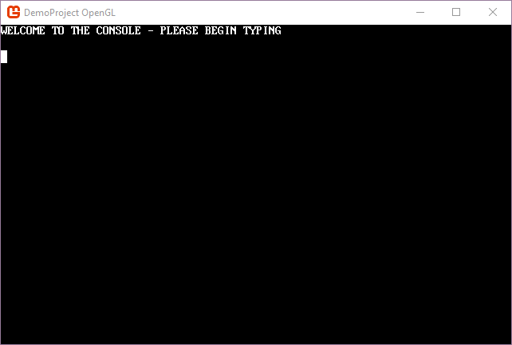
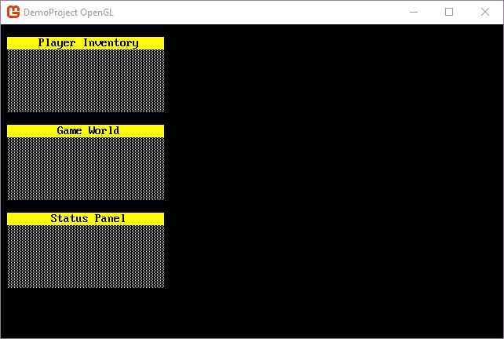

Create your first console
The Console is the main type of object in SadConsole. It's sized by width and height which is made up a grid of cells. Consoles can be created at anytime and are only drawn to the screen when they are added to the CurrentScreen object. For more information about consoles, see What is a console?
A console that you use in your program can be created in two ways:
- Create a new instance of the built in
SadConsole.Consoletype. - Inherit from
SadConsole.Consoleto create a new type.
Using the default console class
When you create a SadConsole.Console class instance, you are getting all of the basic functionality by default. However, the console will be blank. This means that you will have to print all of the things you want on the console after you create it.
The following example shows the basic steps to create a console that has some text on it. You can use this in your Init() method (or whatever it is named for you) in your program.cs file.
var defaultConsole = new SadConsole.Console(80, 25);
defaultConsole.Print(0, 0, "WELCOME TO THE CONSOLE - PLEASE BEGIN TYPING");
defaultConsole.Cursor.IsVisible = true;
defaultConsole.Cursor.Position = new Point(0, 2);
SadConsole.Global.CurrentScreen = defaultConsole;
SadConsole.Global.FocusedConsoles.Set(defaultConsole);
First, A new console is created with 80 cells horizontally by 25 cells vertical. When you call the Print method on a console, you can tell it the X,Y coordinates of where to print, and then what to print. In this example we printed at 0,0 and the text WELCOME TO THE CONSOLE - PLEASE BEGIN TYPING.
After that code, the Cursor.IsVisible is called. This displays the text cursor on the console. Each console has a text cursor but it is invisible by default. The cursor is then positioned to 0,2.
The last two lines of the code above set the console as the CurrentScreen, which displays it. The CurrentScreen is always the object that is drawn and processed by SadConsole. Then, the FocusedConsoles.Set method is called and we pass in the console we created. The focused console always receives keyboard input. The console, when focused, responds to keyboard input by default and starts printing. A visible cursor helps you to know where the next key press is going print.

If you leave the cursor invisible, and do not focus the console, it will become non-interactive.
Creating a new console type
If you want to create a console that looks the same each time it is created, you can create a new class type that inherits from SadConsole.Console.
For example, this creates a new console type that fills the console with a shaded background, and then prints a title at the top. By default, the console is 26x6 in cells, so it looks like a nice little panel.
using Microsoft.Xna.Framework;
using SadConsole;
using System;
using Console = SadConsole.Console;
namespace MyProject
{
class TitleConsole : Console
{
public TitleConsole(string title)
: base(25, 6)
{
Fill(Color.White, Color.Black, 176);
Print(0, 0, title.Align(HorizontalAlignment.Center, Width), Color.Black, Color.Yellow);
}
}
}
To use the console, you can create a new instance of it, providing a title, and then position the console on the screen.
SadConsole.Global.CurrentScreen = new SadConsole.ContainerConsole();
SadConsole.Global.CurrentScreen.Children.Add(new TitleConsole("Player Inventory") { Position = new Point(1, 1) });
SadConsole.Global.CurrentScreen.Children.Add(new TitleConsole("Game World") { Position = new Point(1, 8) });
SadConsole.Global.CurrentScreen.Children.Add(new TitleConsole("Status Panel") { Position = new Point(1, 15) });
Notice that the SadConsole.Global.CurrentScreen is set to a SadConsole.ContainerConsole type. This is a special console that does not draw itself, cannot be sized, and only contains child objects. All console types in SadConsole can actually contain child consoles. If you run that code, you'll see the following screen.
